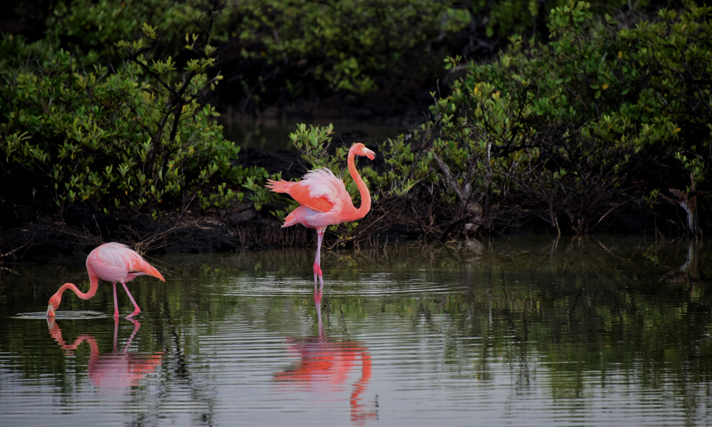
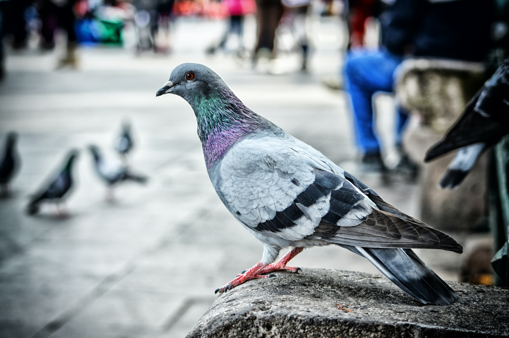

brids

flamingo
Flamingos are tall, slender birds with vibrant pink feathers and long, graceful... more
dove
The dove is a small, gentle bird known for its graceful appearance... more

pigeon
The pigeon is a medium-sized bird with a compact body and short neck. ... more